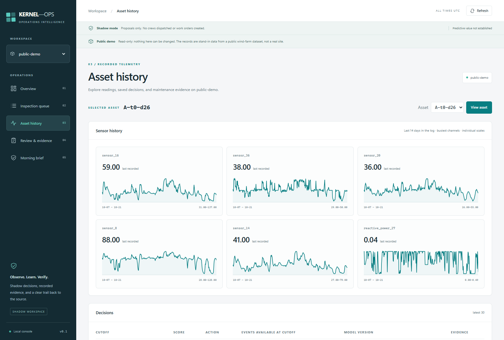

KERNEL-OPS
Connect a maintenance decision to its evidence.
An operations-focused MLOps console for exploring telemetry, recorded model decisions and inspection capacity, paired with a companion site explaining the shadow-pilot workflow.

Why this exists.
A maintenance score alone does not tell an operations team what to inspect. A useful workflow must connect the signal to available evidence, equipment history and the capacity of the team that would act on it.
How it responds.
KERNEL-OPS separates observation, scoring and operational decisions. Its console exposes recorded activity and the evidence behind it while the public demo stays read-only. The companion site explains how a shadow pilot would evaluate the approach before any operational reliance.
- 01
Observe
Organize telemetry and maintenance history around assets and event time.
- 02
Score
Retain scoring runs, model references and point-in-time decision context.
- 03
Prioritize
Connect proposed inspections with capacity-aware decision policies.
- 04
Review
Inspect sensor history, saved verdicts and evidence before considering action.
From inputs to insight.
- Console
- Next.js, React and TypeScript present status, asset history and review workflows.
- Local bridge
- A server-side Python JSON bridge calls existing backend functions.
- Data & models
- Python, pandas, PyArrow, DuckDB and scikit-learn support event processing and model workflows.
- Public demonstration
- A fixed demo site rejects writes and AI requests; the companion website is static HTML.
Architecture summarized from the project source. Runtime verification is described below.
The working experience.
Operational context before action
The running console displays saved scoring activity, the inspection queue and weekly capacity. The visible shadow-mode and public-demo notices make the boundary between inspection proposals and actual operations explicit.
Follow the asset's history
Six telemetry charts sit above the saved decisions for a selected asset. An investigator can relate a proposed decision to recorded measurements and model references rather than rely on an isolated alert.
Explain the pilot, including its limits
The companion website communicates the inspection-planning proposition and evaluation approach. It is presented as part of the same project, with the project's evidence limits preserved.
Telemetry source: CARE to Compare, wind farm A — Fraunhofer IEE, doi:10.3390/data9120138, CC BY-SA 4.0. Records are used as stand-in operational data. Data-derived charts in these captures retain that attribution and share-alike license. Dataset publication ↗ · License ↗
Demonstrated, with context.
The console was run locally in public, read-only mode. Its stand-in wind-farm records show 30 saved scoring runs, one inspection job and 295,435 available events. The asset view displays six recorded telemetry channels and a saved decision trail. These are replayed activity records, not a live sensor feed. Predictive value on real equipment is not established.
Scope & limitations
- The project explicitly states that predictive value is not established; the companion site reports that its fixed recipe did not confirm on unseen compressor data.
- No crew was dispatched, work order created or production system connected. Training, drift alerts, retraining and deployment bundles were not executed during capture.
- The main repository is described as private. The public companion site and its source are linked below; a stable public console endpoint is not claimed.
- Telemetry plots use individual scales. They show sensor history, not a calibrated comparison of sensor magnitude or model accuracy.
Why it belongs in my portfolio.
Brings electrical-system thinking into operational analytics: trace a signal, understand uncertainty and consider the practical constraints on acting on a model output.
View my recruiter profile ↗